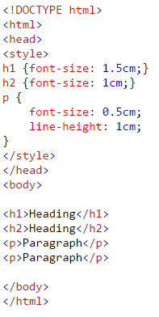
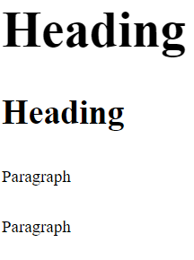
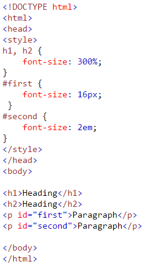
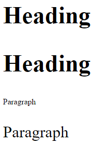

CSS measurement units can be split up into two different categories. They are relative and absolute.
Relative
- em
- ex
- ch
- rem
- vw
- vh
- vmin
- vmax
- %
Relative units are recommended because they can easily be scaled between different devices. The em is the most popular CSS measurement unit.
Absolute
- cm
- mm
- in
- px
- pt
- pc
Absolute units are fixed. They do not change. It is recommended that you do not use absolute units because users access content on all different devices.
Examples
The following are examples of how the absolute units can be used:
 This is an example of using relative units:
 As you can see, implementing units in CSS is quite easy. When one can effectively size a specific part of the page (whether it be the font size, line height, margin, padding, etc.) it will dramatically improve the design of the web page.